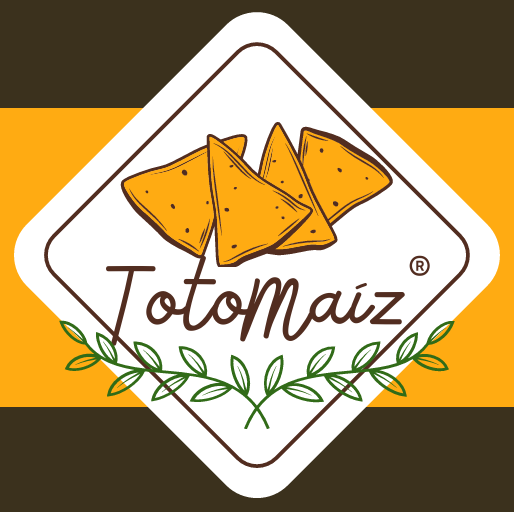

Descripción del corporativo:
TotoMaíz es una marca dedicada a la elaboración y comercialización de totopos artesanales elaborados con ingredientes seleccionados, enfocándose en ofrecer productos con sabor tradicional, variedad y una identidad cercana a la cultura mexicana. La empresa busca combinar calidad, autenticidad e innovación mediante diferentes sabores y presencia digital.